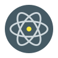
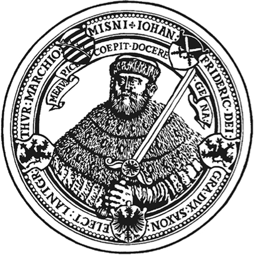
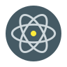
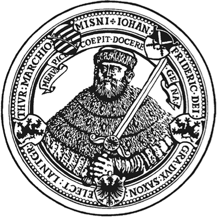

My name is Ali and I am currently working as a senior data scientist at Deutsche Telekom Magenta Voice project. Previously,
I was working as a senior software Engineer in Big Data competence center
(ScaDS) on a collaborative project with KNIME.
I did my BSc in Applied Mathematics at Sharif University of Tehran
and my MSc in Media Informatics at RWTH Aachen, Germany. I finished my PhD
in Parallelization Strategies at Friedrich Schiller University Jena in 2017. Here is
my thesis.
I have a strong mathematical background and been always working in the areas
relevant to both mathematics and computer science.
My teaching experiences involves parallel programming, visual analytic, and big data, and supervising
several seminars and bachelor/master thesis.
In addition to the research and teaching positions, I have also exposed to the leading
responsibility while coordinating the
GraphTea project as an international
collaboration.
I have proficiency in several programming languages and technologies such as
Java/Scala, C++17, Python (pandas, numpy, matplotlib, sklearn), and JS/node.js. I am pretty experienced in parallelization
libraries like MPI, OpenMP/Threading, Apache Flink, Apache Spark,
and CUDA. Additionally, I have some experiences with Go and Rust programming languages.
Magenta is a voicification project that is being developed in Deutsche Telekom to unify the voice control of all Telekom products from smart home to TV and telephone. In this project, I am designing and implementing methods and tools toward a NLU model for the German language, 2019 - 2022.
BIGGR
is a collaborative project between the company KNIME (KNIME) in
Berlin and the Big Data competence center (ScaDS) in
Leipzig.
In this project, we develop a software system in which a user without deep knowledge of big
data processing can build a graph analysis workflows graphically from simple basic
operators.
I also implemented a visualization tool,
called GradoopVis,
on this software which can be used separately as a web application as well as inside the
KNIME software.
For this purpose, the KNIME Analytics platform has been extended with a new set of tools
that represent the GRADOOP operators and the possibility
to execute the resulting workflows on a remote cluster.
GRADOOP is an open-source system,
developed on Apache Flink, for graph analytics
that enables handling of property graphs
(both vertices and edges can have several properties), 2017 - 2019.
SIMG-VIZ
A new visualization system for entity resolution and clustering that allows us to investigate different match and clustering techniques
for multi-source entity resolution. SIMG-VIZ offers the following key features:
SIMG-VIZ allows a user to analyze precomputed similarity graphs and clustering from existing ER tools and also supports executing
and analyzing ER match tasks directly with FAMER.
Different graph and ER cluster visualization techniques and layouts can be applied to choose the best visualizations. To increase performance,
some layouts can be precomputed on the server with either parallel or serial computation.
This provides a significant optimization potential in particular for force-directed layouts. To support visualization of large graphs,
preprocessing techniques such as sampling (also executed in parallel on the server) can be selected to obtain a fast overview
of large similarity graphs and their clustering results. Clusters and their overlaps as well as edges annotated with their type
and similarity are visualized by using a simple but useful cake-like visual metaphor. Users can interact with clusters and select individual clusters for investigation, 2017 - 2018.
PreCol is to compute the graph coloring and
preconditioning in a way which gets benefit from
Automatic Differentiation. The coloring algorithms are implemented in C++ because of efficiency
and parallelism. We also developed two graphical interfaces for Java and MATLAB, 2013 - 2017.
MeProRisk II
Geothermal reservoirs provide heat that can be used to generate clean, renewable, and
plentiful energy. However, the exploration and the development of these reservoirs
involve high engineering and economic risks. Despite steady improvements in drilling
technology over the last decades, drilling of numerous deep boreholes
from the surface into suitable rock types at a depth of some kilometers is still
a major cost component of geothermal energy.
The MeProRisk II project aims at reducing these risks by combining skills from different
scientific disciplines. Geophysicists, mathematicians, and computer scientists from
five German universities and a private company develop and apply new methods in seismic
modeling and interpretation, numerical reservoir simulation, estimation of petrophysical
parameters, and scientific visualization.
My job was to include the parallel computing into the main software, called
SHEMAT-Suite (also look at
SHEMAT),
by considering all existing designs in code, 2012 - 2016.
GraphTea
is an open source mathematical
platform and library for graph
algorithms and visualizations. I am a developer, designer and maintainer of project
GraphTea. It is more than a group of developed algorithms
but rather a platform in which desired algorithms could be easily implemented by a normal
user.
The GraphTea core is written in Java on which we develop a web user interface in Javascript.
So the user can use GraphTea both locally and online, 2012 - Now.
ChemTea is a set of tools which I developed in which the
user can
run a given function on several graphs and see a table of results at the end.
We called this tool at first ChemTea since we used these tools to compute
several known parameters in chemical graph theory over huge set of graphs.
Since the number of graphs grows exponentially I consider different methods
from Big Data approaches. These tools are implemented first as an extension
of GraphTea but then we started a separate project since it became big.
There are some parts of C++ code as well as an interface for python.
The software is not still publicly available, 2014 - Now.
EXPLAIN is a set of interactive learning modules used in
classroom to
teach scientific computing concepts. They are web-based application
written in Python and Javascript. The users can also interactively develop their algorithms
in an online
editor, which is available in the same page as the tool, and test the results instantly,
2013 - 2016.
Selected smaller projects which I did in my master:
Redmine Client is a mobile client for the project management web application
Redmine which is available for Android and IOS now. Humance AG, Cologne, May 2012 -
November 2012.
Castle Crisis is a Android location-based game which I developed during
Bonn Fraunhofer summer school, July
2012.
AggGen is to extract a 3D model of black Carbon based on
TEM (Transmission Electron Microscope) images. The project is implemented in MATLAB/C++
and pursued different approaches toward the problem.
mechanical group of RWTH Aachen, December 2011 - August 2012.
OpenFlipper is a C++ library for 3D graphics
developed at RWTH Aachen.
I was working on an algorithm to find the optimum hexagonal mesh of an object,
which is widely used in the architecture, May 2011 - October 2011.
Publications:
Clicking on one of the following categories will show the publications which have at least that category:


 


